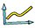
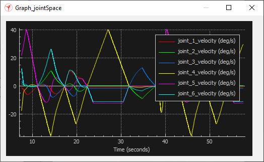

|
Graphs Graphs are scene objects that can record and visualize data from a simulation. Data is recorded in data signals, which are lists of sequential values associated with time stamps. Signals can directly be visualized as time plots. By combining 2 or 3 signals, one can obtain x/y curves, or 3D curves in the scene. Following figure illustrates a time plot, showing 6 signals visualizing joint velocities:  [Examples of a time plot] A graph is an instance of type graph, which derives from type sceneObject. It is added to the scene with [Add > Graph]. Its basic properties are accessed and adjusted in the graph dialog. Refer also to sim.scene:createObject and graph-related methods and properties. The user is in charge of defining signals, curves, and feeding them with appropriate data on a regular basis (usually once per simulation step). Following illustrates how to record and visualize 2 signals (the velocity of two joints over time): --lua
function sysCall_init()
sim = require('sim-2')
joint1 = sim.self:getObject('/joint1')
joint2 = sim.self:getObject('/joint2')
graph = sim.self:getObject('/Graph')
joint1Vel = graph:addSignal({name = 'joint 1 velocity', unit = 'deg/s', color = Color'red', drawLine = true})
joint2Vel = graph:addSignal({name = 'joint 2 velocity', unit = 'deg/s', color = Color'green', drawLine = true})
end
function sysCall_sensing()
graph:setSignalPoint(joint1Vel, 180.0 * joint1.velocity / math.pi)
graph:setSignalPoint(joint2Vel, 180.0 * joint2.velocity / math.pi)
end
Next example shows how to record and visualize an x/y position curve of an object: --lua
function sysCall_init()
sim = require('sim-2')
object = sim.self:getObject('/object')
graph = sim.self:getObject('/Graph')
objectPosX = graph:addSignal()
objectPosY = graph:addSignal()
graph:addCurve({objectPosX, objectPosY}, {name = 'object pos x/y', unit = 'm by m', color = Color'red'})
end
function sysCall_sensing()
local pos = object.worldPosition
graph:setSignalPoint(objectPosX, pos[1])
graph:setSignalPoint(objectPosY, pos[2])
end
|